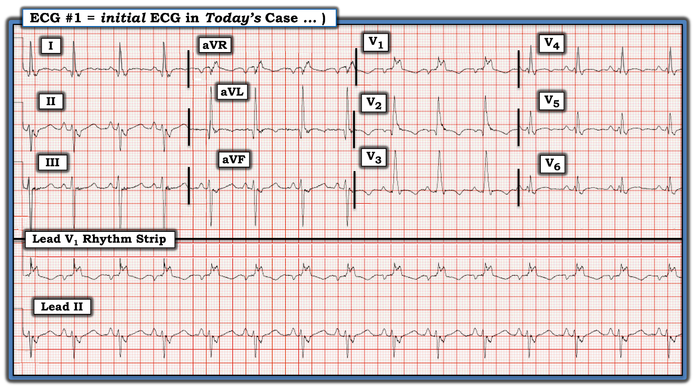
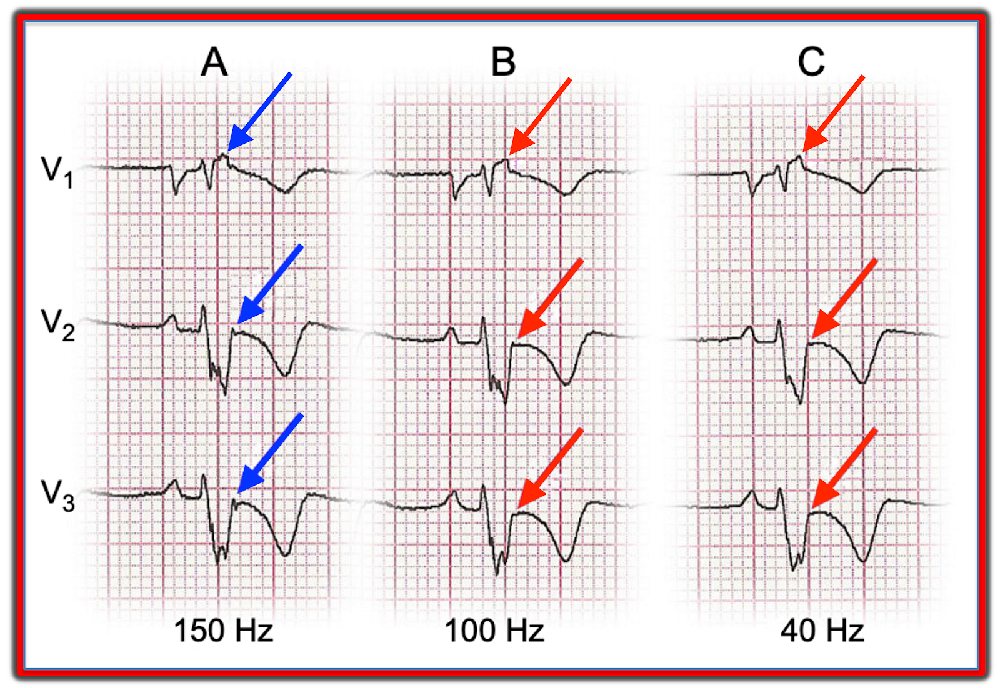
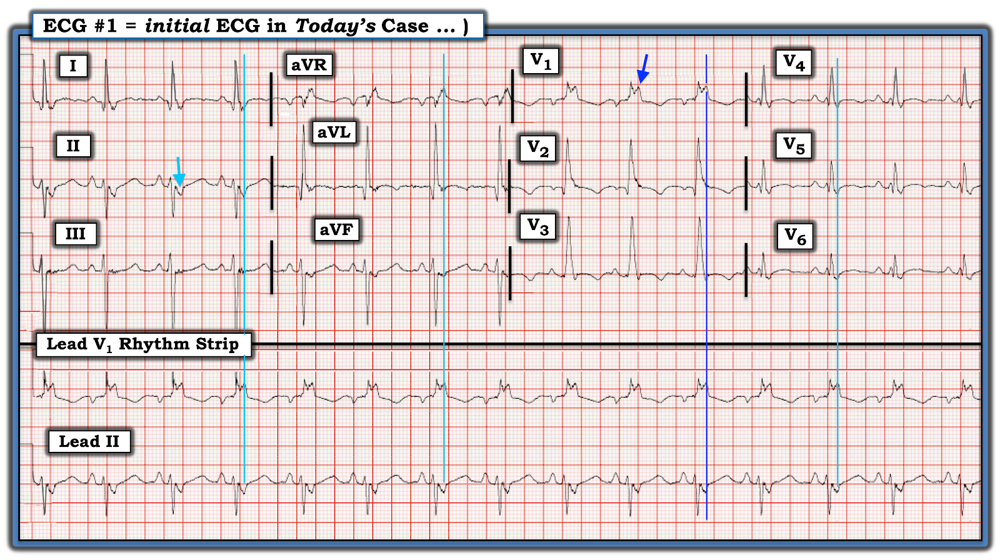
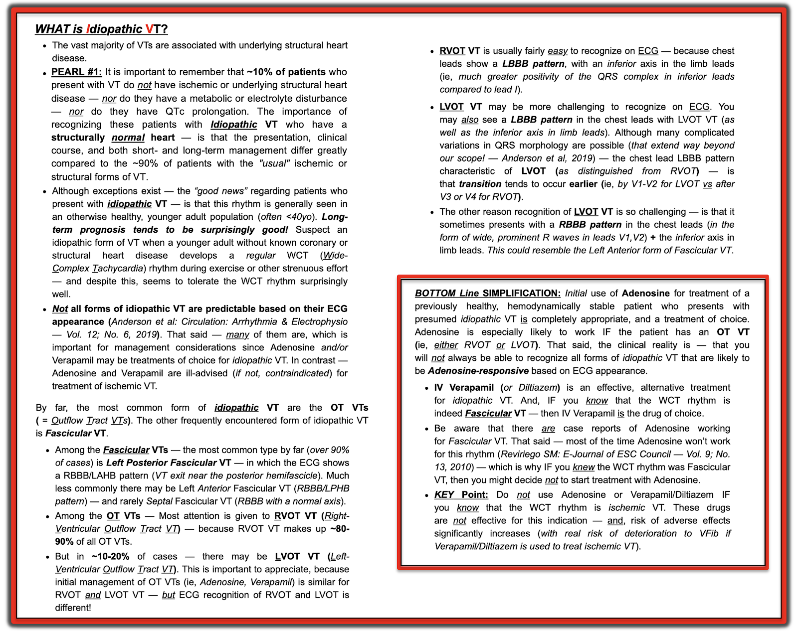

ECG Blog #388 — Vì sao chuyển đạo V1 trông lạ?
Điện tâm đồ ở Hình 1 được ghi từ một phụ nữ 18 tuổi — vừa được hồi sinh ít phút trước sau một cơn ngừng tim ngoài bệnh viện.
CÂU HỎI:
Dựa trên bệnh sử lâm sàng nêu trên ...
- BẠN sẽ đọc điện tâm đồ sau hồi sinh của bệnh nhân này thế nào?
- Điện tâm đồ ở Hình 1 có cung cấp (các) manh mối về nguyên nhân gây ngừng tim của bệnh nhân này không?


(LƯU Ý: Cài đặt bộ lọc dùng ngưỡng cắt tần số cao 150 Hz.)
Những suy nghĩ ban đầu CỦA TÔI về ca hôm nay:
Bản ghi hôm nay được gửi đến tôi. Khi mới nhìn điện tâm đồ này — tôi có nhiều câu hỏi hơn là câu trả lời ...
- "Tin tốt" — là chúng ta thấy rõ sóng P xoang ở điện tâm đồ #1, xác nhận đã chuyển về nhịp xoang (tức là sóng P dương ở chuyển đạo II đi trước mỗi phức bộ QRS với khoảng PR hằng định và bình thường).
- Phần khó của bản ghi 12 chuyển đạo ở Hình 1 — là TẠI SAO một phụ nữ 18 tuổi lại có hình thái QRS rộng và kỳ dị đến vậy? Tôi ngờ rằng câu trả lời nằm ở lý do vì sao một phụ nữ 18 tuổi có thể bị ngừng tim.
Nhìn kỹ hơn hình thái QRS ở điện tâm đồ #1:
Thoạt nhìn — tôi nghĩ chúng ta chỉ đơn giản đang thấy một phức bộ QRS rất rộng và kỳ dị, nhất là ở chuyển đạo V1 (nơi QRS trông như đo được ít nhất 0.15 giây).
- QRS dương hoàn toàn ở chuyển đạo V1 — cùng với sóng S tận rộng ở các chuyển đạo bên I và V6 — phù hợp với RBBB hoàn toàn (blốc nhánh phải — Right Bundle Branch Block).
- Dạng rS với phần âm chiếm ưu thế ở cả 3 chuyển đạo dưới — phù hợp với LAHB (blốc phân nhánh trái trước — Left Anterior HemiBlock) đi kèm — do đó RBBB/LAHB = Blốc hai phân nhánh.
- Ngoài ra — dường như có phân mảnh (khía quá mức của QRS) đáng kể — thường là dấu hiệu của "sẹo" nền do nhồi máu, bệnh cơ tim, hoặc một dạng bệnh tim cấu trúc nền khác.
DIỄN TIẾN CỦA CA BỆNH:
Đến lúc này — tôi đã biết câu trả lời cho một số câu hỏi đã nêu ở trên:
- Người phụ nữ 18 tuổi có bản ghi sau hồi sinh ở Hình 1 phía trên — được phát hiện mắc ARVC/ARVD (bệnh cơ tim hay loạn sản thất phải gây loạn nhịp — Arrhythmogenic Right Ventricular Cardiomyopathy or Dysplasia).
- Xét nghiệm di truyền xác nhận ARVC (bệnh nhân mang gen DSG2 đồng hợp tử — liên quan với cả thể di truyền trội và thể di truyền lặn trên nhiễm sắc thể thường của ARVC).
- Em trai của bệnh nhân cũng được chẩn đoán "một bệnh cơ tim".
- Siêu âm tim cho thấy bệnh cơ tim giãn rõ rệt (EF ~22% với giảm vận động toàn bộ, kể cả thất phải giãn nặng và suy giảm chức năng thất phải).
- MRI xác nhận ARVC.
- Bệnh nhân được đặt ICD (máy khử rung tim cấy được — Implantable Cardiac Defibrillator) — và được xuất viện. Người phụ nữ trẻ này ổn định trong một năm — nhưng không may lại bị ngừng tim lần nữa, và lần này không hồi sinh được.
===============================
Về ARVC/ARVD ...
ARVD là một rối loạn di truyền của cơ tim. Do đột biến gen có tính gia đình — có thâm nhiễm mỡ ở thành tự do thất phải (Shah và cs. — Stat Pearls-NCBI-2022). Được Guy Fontaine mô tả lần đầu năm 1977 — rối loạn này có tỷ lệ hiện mắc ~1/5,000 trong dân số chung.
- Về lâm sàng — mối lo ngại là nguy cơ cao xuất hiện VT với hình ảnh LBBB (gợi ý VT khởi phát từ thất phải).
- Nhìn tổng thể — ARVD là một rối loạn không thường gặp. Dù vậy — ARVD dường như là một nguyên nhân bị đánh giá thấp gây SCD (đột tử do tim — Sudden Cardiac Death), nhất là ở người trẻ tuổi, chiếm ~20% số ca SCD ở người dưới 35 tuổi (Mu và cs. — Medicine 96(47):e8808, 2017).
- Điểm MẤU CHỐT: Quá thường xuyên, chẩn đoán ARVD chỉ được đặt sau khi tử vong. Điều này đặc biệt đáng tiếc — vì điều trị (dưới dạng cấy ICD) có sẵn giúp kéo dài sự sống.
- Điện tâm đồ có thể cung cấp những manh mối gợi ý chẩn đoán ARVD — nhưng như bàn dưới đây, có những lưu ý quan trọng cần biết khi đọc một điện tâm đồ mà bạn đang cân nhắc khả năng ARVD.
- Siêu âm tim có thể cho manh mối hữu ích (tức là cho thấy thất phải giãn, thành tự do thất phải rất mỏng — và — suy giảm chức năng thất phải).
- Chẩn đoán xác định có thể dựa vào sinh thiết nội mạc cơ tim — hoặc, phổ biến hơn trong những năm gần đây, bằng MRI — kết hợp với xét nghiệm di truyền.
- Xét nghiệm di truyền cho người thân là thiết yếu để tránh bỏ sót bệnh ở các thành viên trong gia đình.
Có thể chẩn đoán ARVD từ hình thái QRS trong lúc VT không?
Như đã gợi ý ở trên — ARVD là nguyên nhân phổ biến đến bất ngờ trong số các nguyên nhân có thể gây đột tử ở nhóm người trẻ tuổi “trước đó khỏe mạnh”. Nhiều bệnh nhân trong số này không có triệu chứng gì trước khi đến viện với cơn VT lần thứ 1 (và không may – đôi khi cũng là cơn cuối cùng). Ở những bệnh nhân được hồi sinh thành công — câu hỏi đặt ra là LIỆU có thể chẩn đoán ARVD là nguyên nhân dựa vào hình thái QRS trên điện tâm đồ ghi trong lúc cơn VT bền bỉ hay không? 2 bài báo của Hoffmayer và cs. giúp làm sáng tỏ câu hỏi này (JACC 58(8):831-838, 2011 — và — Front Physiol 3:23, 2012).
- VT ở bệnh nhân ARVD thường khởi phát từ thất phải. Vì vậy — trong lúc VT thường thấy hình thái QRS “giống lbbb” ở các chuyển đạo trước ngực. Dù vậy — trục mặt phẳng trán có thể thay đổi, tùy vào vị trí tổn thương nặng nhất trong thất phải, và tùy thâm nhiễm mỡ thất phải lan tỏa hay khu trú hơn.
- Một nguyên nhân khác khiến hình thái QRS thay đổi (đôi khi không đoán trước được) trong VT liên quan ARVD — là một số bệnh nhân cũng có tổn thương thất trái, có thể là nguồn gốc của VT (Ghannudi và cs. — Clin Med Insights Cardiol 8(Suppl 4):27-36, 2014).
- Về lâm sàng — Chẩn đoán phân biệt một cơn VT bền bỉ ở người trẻ trước đó khỏe mạnh gồm một dạng VT vô căn (thường gặp nhất là RVOT VT = VT đường ra thất phải — Right Ventricular Outflow Track VT) với AVRD. Nhìn chung, giữa 2 khả năng chính này — RVOT VT là thực thể phổ biến hơn rất nhiều. Dù vậy, do ARVD có tiên lượng tử vong cao hơn — điều thiết yếu là không được bỏ sót chẩn đoán này (nhất là khi ARVD không hiếm như nhiều người nghĩ).
- LƯU Ý: Sự hiện diện của phân mảnh QRS và/hoặc nhận ra nhiều hình thái QRS trong các cơn VT bền bỉ tái diễn là 2 dấu hiệu điện tâm đồ nghiêng về AVRD (tức là RVOT VT thường không có phân mảnh [vì theo định nghĩa thì không có bệnh tim cấu trúc nền] — và RVOT có xu hướng chỉ biểu hiện một hình thái QRS duy nhất [trong khi ARVD dễ biểu hiện nhiều hình thái VT hơn, nhất là khi thâm nhiễm mỡ liên quan nhiều vùng trong thất phải]).
- ĐIỀU CỐT LÕI: Phân mảnh QRS và nhiều hình thái VT không phải lúc nào cũng thấy ở mọi bệnh nhân ARVD. Vì vậy — độ nhạy và độ đặc hiệu của các đặc điểm điện tâm đồ trong lúc cơn VT còn xa mới hoàn hảo để dự đoán bệnh nhân nào có khả năng mắc ARVD. Dù vậy, về lâm sàng — điều này không quan trọng trong tình huống cấp cứu vì xử trí ban đầu (tức là bằng thuốc hoặc sốc điện chuyển nhịp đồng bộ) về cơ bản là như nhau! Và, vào năm 2023 — hầu như mọi người trẻ có một cơn VT đều nên được đánh giá tiếp, bao gồm MRI tim để loại trừ các bệnh lý tim nền nặng có thể giả dạng, như ARVD hoặc sarcoidosis có tổn thương tim. MRI tim khi đó sẽ cho bạn biết ARVD có hay không hiện diện (Macias và cs. — JAFIB 7(4):106-111,2015).
Khi nào nên nghi ngờ ARVD từ điện tâm đồ 12 chuyển đạo:
Nắm được các dấu hiệu điện tâm đồ của AVRD có thể giúp chẩn đoán dễ hơn:
- Sóng T đảo ngược ở các chuyển đạo bên phải V1,V2,V3 hầu như luôn gặp — đến mức chẩn đoán ARVD trở nên ít khả năng nếu không có sóng T đảo ngược ở các chuyển đạo bên phải.
- Có thể có QRS giãn rộng khu trú (tới ≥110 msec.) ở các chuyển đạo bên phải này.
- Dấu hiệu điện tâm đồ đặc hiệu nhất để chẩn đoán ARVD là sóng Epsilon (Pérez-Riera và cs. — Ind Pacing Electrophys J 19:63-67, 2019). Những sóng lệch khó nắm bắt này được cho là đại diện cho các điện thế muộn do dẫn truyền trong thất chậm (do thâm nhiễm mỡ, xen lẫn mô xơ nằm giữa phần cơ tim bình thường còn sót lại).
- Dù vậy — sóng Epsilon thường có giá trị chẩn đoán hạn chế, vì: i) Các sơ suất kỹ thuật làm giảm khả năng phát hiện, ngay cả ở bệnh nhân có những sóng lệch này; và, ii) Sóng Epsilon thường là biểu hiện của bệnh đã tiến triển nặng hơn.
===============================
Vì sao khó phát hiện Sóng Epsilon trên điện tâm đồ?
- Có một số lý do ...
Lý do #1: Dùng sai cài đặt bộ lọc ...
Quá thường xuyên — cài đặt bộ lọc bị bỏ qua. Các cài đặt khác nhau thường được dùng cho chế độ theo dõi, khi trọng tâm là xác định nhịp, so với chế độ chẩn đoán, khi trọng tâm là đọc các dạng sóng 12 chuyển đạo. Ở chế độ theo dõi thường lọc mạnh hơn, với cài đặt hay dùng từ 0.5 Hz đến 40 Hz. Làm vậy có lợi là giảm thiểu nhiễu và trôi đường nền vốn có thể ảnh hưởng việc đọc nhịp. Ngược lại — dải thông rộng hơn (thường từ 0.05 Hz đến 150 Hz) — được khuyến cáo cho chế độ chẩn đoán, khi việc phân tích đoạn ST chính xác hơn là thiết yếu.
- Tôi lấy Hình 2 từ minh họa của García-Niebla và cs. (Rev Esp Cardiol 69(4):438, 2016) — để cho thấy việc chọn tần số cắt 40 Hz (vốn hay được chọn trong thực hành lâm sàng nhằm "cải thiện" hình thức bản ghi) có thể làm giảm (thậm chí làm mất) các chi tiết tinh tế trên điện tâm đồ như sóng Epsilon, vốn chỉ thấy rõ nhất ở Hình 2 với cài đặt bộ lọc thông cao (high-pass) có tần số cắt 150 Hz (các mũi tên XANH LAM).


Lý do #2: Dùng sai hệ thống chuyển đạo ...
Tôi rất khuyến khích đọc mục của BS. Buttner và Cadogan trên Life-In-The-Fast-Lane về Chuyển đạo Fontaine — https://litfl.com/fontaine-lead/ — vì bài tổng quan ngắn gọn này nêu những gì cần biết để tối ưu cơ hội nhận ra sóng Epsilon trên điện tâm đồ. Dưới đây tôi nêu bật vài điểm MẤU CHỐT từ bài tổng quan LITFL này:
- Nhận ra sóng Epsilon là dấu hiệu điện tâm đồ đặc hiệu nhất của ARVD. Những sóng lệch nhỏ này có thể trông như một "nốt nhỏ" (blip) hay "gợn sóng" (wiggle), thường xuất hiện nhất ở cuối, hoặc ngay sau phức bộ QRS — nhưng chắc chắn trước sóng T. Sóng Epsilon thấy rõ nhất ở chuyển đạo V1,V2 — và kém rõ hơn một chút ở V3,V4. Đôi khi — chúng cũng có thể thấy ở các chuyển đạo khác.
- LITFL dẫn con số 23% cho tần suất thấy được sóng epsilon trên điện tâm đồ chuẩn ở bệnh nhân ARVD. Cài đặt bộ lọc dùng khi đưa ra con số này không được nêu — vì vậy, với xu hướng quá thường xuyên chọn cài đặt lọc thông cao 40 Hz (thay vì cài đặt tối ưu 150 Hz) — có thể dự đoán khả năng tìm thấy sóng epsilon còn thấp hơn nữa trên các điện tâm đồ được gửi đến chúng tôi để tìm sóng Epsilon.
- Ngược lại — dùng cách đặt điện cực đặc biệt của máy điện tâm đồ chuẩn gọi là cách đặt chuyển đạo Fontaine — cho phép phát hiện sóng Epsilon ở tới 75% bệnh nhân! Thay vì chép lại các hướng dẫn dễ làm theo trên trang LITFL — tôi xin giới thiệu bạn đọc quan tâm vào thẳng trang của họ — https://litfl.com/fontaine-lead/ —
- Cuối cùng — Cần biết các dạng sóng Epsilon rất đa dạng về hình dạng! Gồm: i) Sóng "gợn" (wiggle); ii) Gai nhỏ hướng lên; iii) Gai nhỏ hướng xuống; và/hoặc, iv) Sóng lệch biên độ trơn ở cuối QRS (có thể làm QRS kéo dài thêm tới 25 msec ở các chuyển đạo bên phải.).
===============================
Hãy NHÌN LẠI bản ghi hôm nay:
"Trang bị" hiểu biết trên về phát hiện sóng Epsilon trên điện tâm đồ — Hãy NHÌN LẠI điện tâm đồ ban đầu hôm nay (Hình 3).
- Bây giờ bạn sẽ đọc điện tâm đồ ban đầu trong ca hôm nay thế nào?
- Bạn có thấy sóng Epsilon ở Hình 3 không? Nếu có — ở (những) chuyển đạo nào?
===============================
TRẢ LỜI: Diễn giải Hình 3 . . .
Tôi hoàn toàn thừa nhận rằng trước năm 2010, khi tôi bắt đầu ECG Blog và bắt đầu tham gia nhiều vào tư vấn điện tâm đồ qua internet — tôi chưa có kinh nghiệm trực tiếp nào với sóng Epsilon. Dù đến nay tôi vẫn ít khi gặp hiện tượng điện tâm đồ hấp dẫn này — tôi đã tự tin hơn nhiều trong việc phát hiện nó.
- Điện tâm đồ trong ca hôm nay là minh họa ĐẸP NHẤT về sóng Epsilon mà tôi thấy cho đến nay.


Nhận xét của tôi về Hình 4:
Nhịp ở Hình 4 là nhịp xoang — bằng chứng là sóng P đều, dương ở chuyển đạo II, với khoảng PR hằng định và bình thường.
- Như đã nêu ở đầu bài hôm nay — phức bộ QRS rộng, với hình thái QRS phù hợp với RBBB/LAHB.
- Lưu ý có sóng T đảo ngược ở các chuyển đạo trước, như có thể dự đoán với ARVD (dù bản thân RBBB cũng có thể giải thích một phần sóng T đảo ngược ở các chuyển đạo trước này).
- Điểm MẤU CHỐT: Lý do phức bộ QRS ở chuyển đạo V1 có hình dạng kỳ dị — là vì QRS ở chuyển đạo này bị kéo dài bởi một sóng Epsilon khổng lồ (mũi tên XANH LAM đậm).
- Để hỗ trợ tìm sóng Epsilon ở các chuyển đạo khác — tôi kẻ một đường thời gian thẳng đứng màu XANH LAM đậm qua đỉnh của sóng Epsilon khổng lồ ở chuyển đạo V1 — kéo xuống dưới qua dải nhịp dài chuyển đạo II ở cuối bản ghi. Làm vậy sẽ xác định điểm trên 2 dải nhịp dài ghi đồng thời đánh dấu thời điểm xuất hiện sóng Epsilon.
- Dùng điểm tham chiếu đã xác định cho sóng Epsilon trên các dải nhịp dài chuyển đạo II và chuyển đạo V1 — tôi kéo tiếp lên trên một đường thời gian thẳng đứng màu XANH LAM nhạt để làm nổi bật vị trí dự kiến của bất kỳ sóng Epsilon nào có thể thấy ở các chuyển đạo ghi đồng thời I,II,III — aVR,aVL,aVF — và V4,V5,V6.
- Mũi tên XANH LAM nhạt ở chuyển đạo II làm nổi bật một sóng Epsilon âm lớn đến bất ngờ có mặt ở chuyển đạo này.
- Dõi theo các đường thời gian XANH LAM nhạt kéo lên trên này — có thể thấy các sóng Epsilon âm nhỏ hơn nhưng chắc chắn hiện diện cũng có ở các chuyển đạo I, aVL, aVF, và V3 đến V6.
- Một sóng Epsilon dương khác thấy ở chuyển đạo aVR.
==================================
Lời cảm ơn: Xin cảm ơn Mubarak Al-Hatemi (đến từ Qatar) đã chia sẻ ca bệnh và bản ghi này.
==================================

==============================
PHẦN BỔ SUNG (7/29/2023):
Tôi tóm tắt các đặc điểm MẤU CHỐT về VT vô căn ở Hình 4.



ECG Media PEARL #14 (8 phút Audio) — VT vô căn là gì? — TẠI SAO ta cần quan tâm? Chú ý đặc biệt đến 2 dạng thường gặp nhất = RVOT (đường ra thất phải — Right Ventricular Outflow Track) VT và VT phân nhánh (fascicular VT).
==============================
Các bài ECG Blog liên quan đến ca hôm nay:
- ECG Blog #205 — Ôn lại Cách tiếp cận hệ thống của tôi trong đọc điện tâm đồ 12 chuyển đạo.
- ECG Blog #185 — Ôn lại cách tiếp cận Ps, Qs, 3R trong đọc nhịp.
- Mời xem Bình luận của tôi ở cuối trang trong bài ngày June 3, 2023 trên Dr. Smith's ECG Blog — trong đó một ca ARVC được phân tích.
- ECG Blog #220 — Ôn lại cách tiếp cận WCT đều (nhịp nhanh QRS rộng — Wide-Complex Tachycardia).
- ECG Blog #196 — Phân tích một ca khác có nhịp WCT đều.
- ECG Blog #204 — Ôn lại chẩn đoán điện tâm đồ các blốc nhánh (RBBB/LBBB/IVCD).
- ECG Blog #203 — Ôn lại chẩn đoán điện tâm đồ về trục và các blốc phân nhánh. Để ôn lại hình thái QRS trong các blốc hai phân nhánh (RBBB/LAHB; RBBB/LPHB) — xem Video Pearl trong bài blog này.
- ECG Blog #211 — TẠI SAO xảy ra dẫn truyền lệch hướng?
- ECG Blog #197 — Ôn lại VT phân nhánh.
- ECG Blog #301 — Phân tích một WCT có nguồn gốc trên thất! (với RẤT NHIỀU nội dung về dẫn truyền lệch hướng).
- ECG Blog #38 và Blog #85 và Blog #323 — Ôn lại VT phân nhánh.
- ECG Blog #278 — Một ca khác có nhịp WCT đều ở người trẻ tuổi.
- ECG Blog #35 — Ôn lại VT RVOT.
- ECG Blog #42 — Tiêu chuẩn phân biệt VT với dẫn truyền lệch hướng.